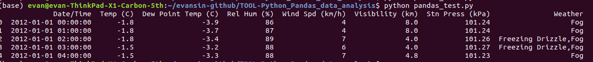
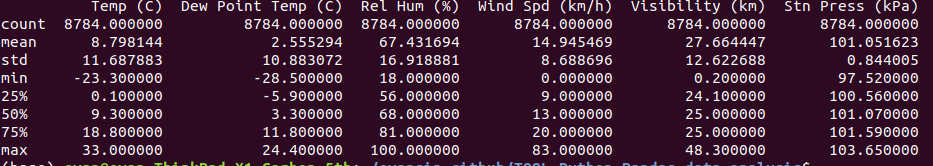
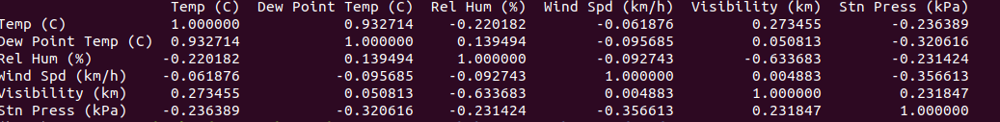
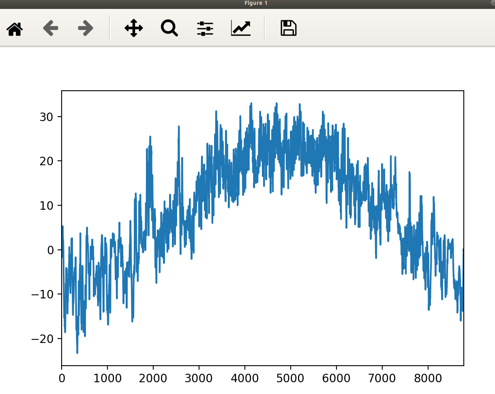
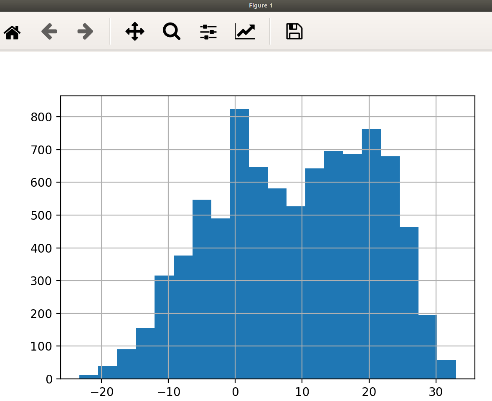
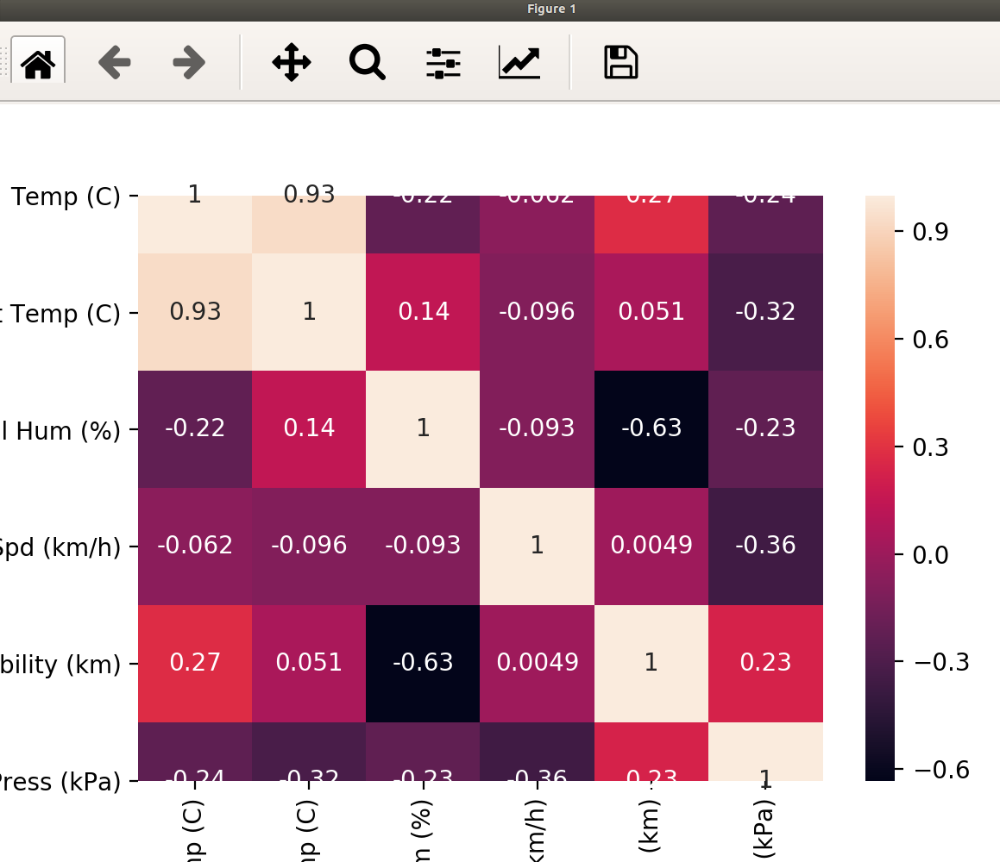

Concept
Pandas 一樣是 python 的 libary，pandas 很像 excel，
但沒有 excel 來得直覺，同樣可以將資料呈現像試算表，在資料分析的角色中。
數據分析大多數時間都在做資料整理，基本上用 Pandas 整理資料，用 Numpy、SkLearn 等…計算分析
Pandas 重要的兩個概念:
- Series (像是list、array，只是每欄有名稱)
- DataFrame (像是Excel的試算表表格)
Step 1: Read File (CSV)
既然要處理資料，必定要有資料來源，Pandas 提供讀入 CSV 的好方法，
相較於使用 Python 原生的讀入方式更便利許多，隨後會介紹差異。
以下程式可以讀入範例 CSV，由於此範例有 100(行) * 6(欄) 資料，
相當的多，所以使用 df.head() 僅讀出前 5 個資料內容。
df = pd.read_csv(“weather_2012.csv”)
print(df.head())

Step 2: Get Data (part of CSV)
CSV中有這些欄位
- Date/Time
- Temp (C)
- Dew Point Temp (C) : 露點溫度是在固定氣壓之下，空氣中所含的氣態水達到飽和而凝結成液態水所需要降至的溫度
- Rel Hum (%)
- Wind Spd (km/h)
- Visibility (km)
- Stn Press (kPa)
- Weather
可以只dump出特定欄位的資料
print(df[“Temp (C)"].values）
Step 3: Analysis (numerical)
可以用Pandas裡面內建的方式
print(df[“Temp (C)"].values.std())
print(df[“Temp (C)"].values.mean())
…
describe()很好用,會自動做常用的數值分析
print(df.describe())

corr()很好用,會做這些欄位的關聯性分析
print(df.corr())
1就代表最相關,數值愈大越相關

Step 4: Analysis (visualized)
把點印出來
df[“Temp (C)"].plot()
plt.show()

透過 plot() 劃出來的圖形，無法有效知道成績分布，
藉此可以使用 pandas 提供的 hist() 方法來劃出直方圖
bins 可以控制直方圖的寬度
df[“Temp (C)"].hist(bins=20)
plt.show()

相關性也可以視覺化
import seaborn as sn
sn.heatmap(df.corr(), annot=True)
plt.show()
熱度圖使用了顏色來做關聯性的區分;熱度圖中顏色越極端(接近全白、全黑)的格子代表關聯性越強的表徵。
熱度圖中有一條對角的全白線，此現象應該忽略，因為它是代表表徵與他自己本身的關聯性自然為1
